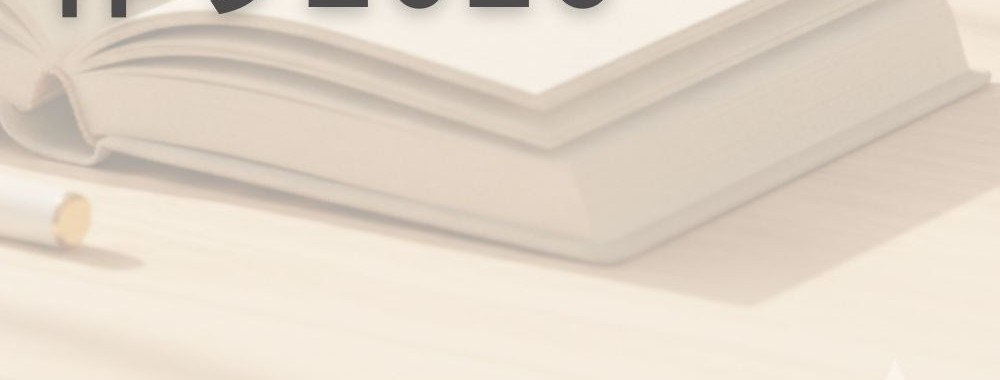

9/7MON
今の自分から書いてみる
残りの2026年、何をしたい？ どこへ行きたい？ 誰と会いたい？
Myリスト作り カクダケ2026
まだ3ヶ月ある。
ちょっと何かが起きたら、おもしろい。
年末に「今年、何してたっけ？」と振り返る前に。
残りの2026年をどう過ごしたいか、一度自分のために考える時間をつくってみませんか？
WHY NOW?
年末になって一年を振り返ることはあっても、そのときにはもう今年はほとんど終わっています。
だから、その前に。9月7日（月）、2026年の残りをどんなふうに過ごしたいか考えてみる。
何をしたい？ どこへ行きたい？ 誰と会いたい？ 何がちょっと気になってる？
9月の時点で一度考えておくから、
そこからできることがあります。
9月 → 12月
残りの2026年、何をしたい？ どこへ行きたい？ 誰と会いたい？
いつもの毎日を過ごす
できたことも、できなかったことも、思いがけず起きたことも。
振り返って終わりじゃない。今年の残りを、もう一度考えられます。
CHECK IN
書いた通りに全部進むわけではありません。
少し前の自分と今の自分を比べると、「意外とやってた」「今はもう違うかも」「書いていなかったことが始まっていた」なんてこともあります。
その繰り返しが、
自分を見るための小さな「定点」になる。
MAKE TIME
やりたいことなんて、ひとりでも書けます。いつでも書けます。
でも、「いつでもできること」って、意外とやらなかったりする。
毎日のやることに追われていると、自分が何をしたいのかを考える時間は後回しになりがちです。
「書く時間を確保する」
それ自体にも意味がある。

VOICES
書いたことで動いたり。立ち止まったことで気づいたり。
その変化は、人それぞれです。
はじめて参加してみて
忙しい毎日の中で「やりたいこと」を考える余裕がなかったけれど、書き始めると楽しいことが浮かび、自分の中にエネルギーがあることに気づいたそう。
その後は、何かを増やすだけではなく、今あるものに集中するために「やらない」と決めるという選択にもつながりました。
初めてでも、
書くことで見えてくるものがある。
続けて見えてきたこと
これまで書いてきたリストを見返し、深掘りする中で、実際に予定になったことや始めたことだけではなく、そこに並んでいるものから「今の自分が大切にしたいもの」にも気づいたそう。
続けて見ていくから、
気づけるものがある。
あなたの場合は、
どんなことが起きるでしょう。
TOGETHER
「Myリスト作り カクダケ2026」は、2026年を通して3ヶ月に一度、みんなで集まっています。
3月、6月と開催してきて、今年残っているのは9月7日（月）と12月7日（月）の2回。
今回募集するのは、新しく始まる3ヶ月プログラムではありません。
すでに年間で参加しているみんなの中に入って、2026年最後の2回を一緒に過ごしてみませんか？というお誘いです。
誰かのワクワクから、
自分のワクワクが見つかる。
LITTLE WANTS
何かを達成するためじゃなく、「ちょっと何かしたくなる」。そんなワクワクを、みんなで面白がる場所です。
YOUR STORY
意識しなければ、毎日はけっこうなんとなく過ぎていきます。
人生の全部を思い通りにはできないけれど、
「こんなふうに過ごしたい」
「これをやってみたい」
と、自分で選べることはある。
自分の一年に、
自分で関わってみる。
そして12月31日に、
「2026年、こんな一年だったな」
と振り返れたら。
LAST TWO DAYS
何する？ どこ行く？
誰と会う？ 何を楽しむ？
Myリスト作り カクダケ2026
第3回
10:00〜12:00 Myリスト作り
13:30〜14:30 深掘り会
第4回
10:00〜12:00 Myリスト作り
13:30〜14:30 深掘り会
開催方法オンライン（Zoom）
2回セット参加費5,000円
9月・12月それぞれの Myリスト作り＋深掘り会 すべて含まれています。9月に書いて、3ヶ月を過ごして、12月にもう一度。
あなたの2026年に、どんな物語が増えるでしょう。